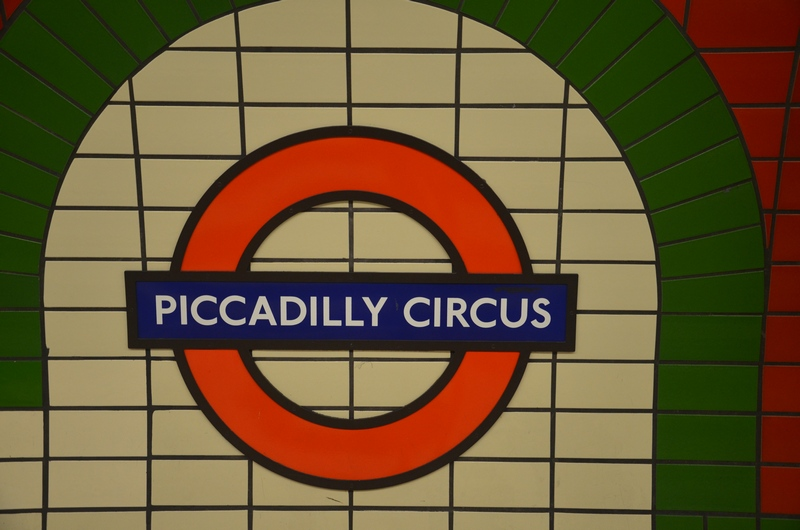
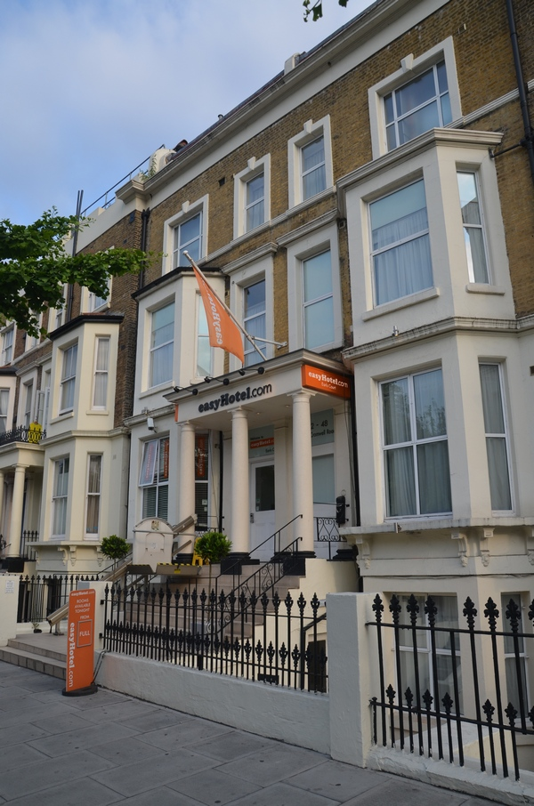
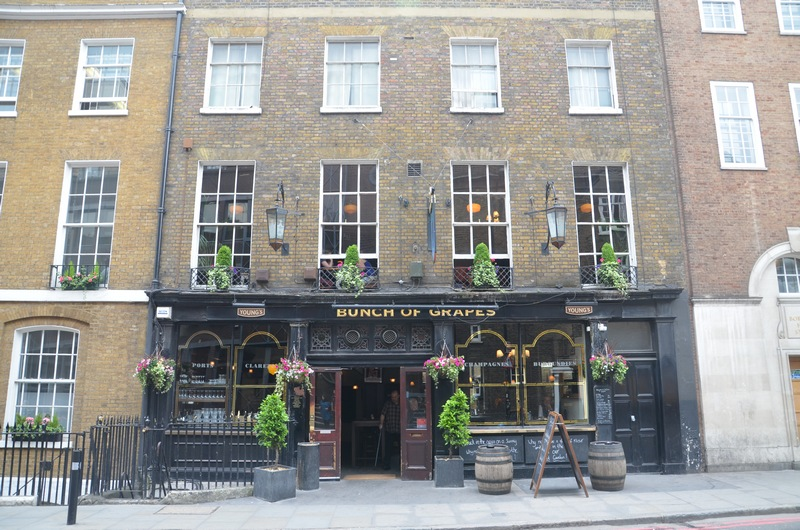
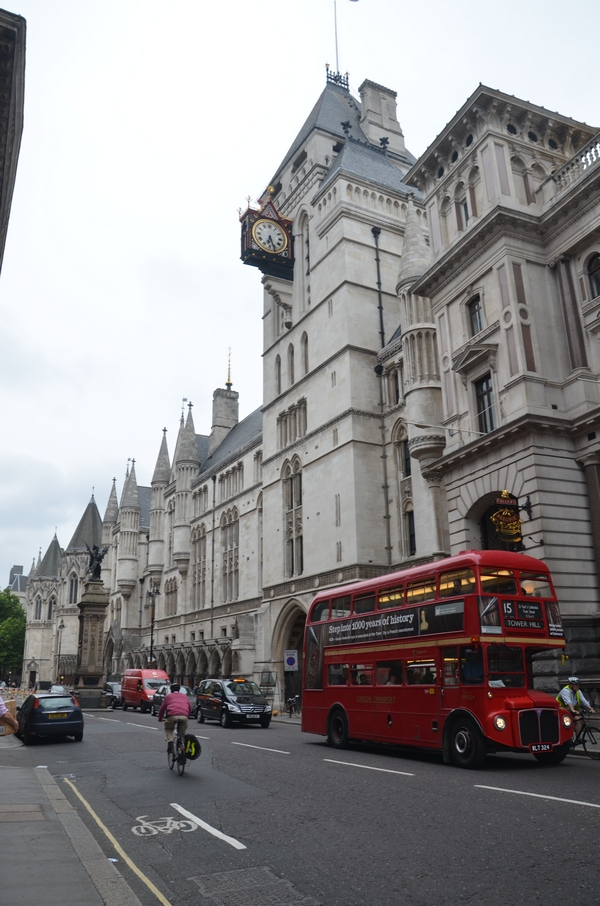
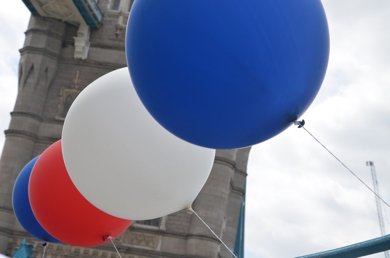

Léto za námi, zima na krku… A protože to letos tak rychle uteklo a já na naši červencovou dovolenou ráda vzpomínám, rozhodla jsem se věnovat jí ještě jeden malý článek a vecpat do něj to, co se nikam jinam nevešlo.
Londýnské metro
Moc jsem se o něm nerozepisovala, ale určitě stojí za zmínku. Přestože jeho síť je ještě hustší, než v případě toho pařížského, orientace nám nedělala vůbec žádný problém. Všechno bylo perfektně značené, takže se skoro nedalo zabloudit. A ačkoliv je doprava v Londýně mnohem dražší než ta v Paříži, čistota vagonů i stanic je nesrovnatelná. Francouzi holt asi budou větší čuňátka :D… A s prehistorickými vagony jsme se tu také nesetkali. 1:0 pro Londýn :-)

Zastávka metra na Piccadilly
Londýňané
Možná jsme měli jen štěstí na fajn lidi, ale v podstatě v nás obyvatelé Londýna zanechali ty nejlepší dojmy. Od milé obsluhy v bance přes personál našeho hotelu až po prodavače v obchodech. Všichni byli zdvořilí a usměvaví. V nádražce, kde jsme si poprvé dali fish & chips se s námi dokonce dal do řeči sympatický pán od sousedního stolu a pochválil Péťovi, že mu ladí peněženka ke kraťasům :D. Další milá příhoda se nám stala v metru, kde nám jeden mladík uvolnil místo, abychom si s Péťou mohli sednout vedle sebe - jen tak. Tohle by se v Čechách stát opravdu nemohlo :D…

Můžeme doporučit :)
Anglická kuchyně
… nemá ve světě příliš dobrou pověst, ale já si nemůžu pomoct - mně v Londýně chutnalo :-). Zamilovala jsem si jejich pomazánky ze Sainsbury’s - na tu s kari kuřetem nebo z cizrny dodneška s láskou vzpomínám. Taky tousťák mají moc dobrej, fakt :D! Je tedy pravda, že ta jejich strava nepůsobí zrovna dvakrát zdravě - v obchodech regály přetékají spoustou polotovarů, které stačí jen ohřát v mikrovlnce, a také hromadou sladkého (a výborného!) pečiva. Co mě neokouzlilo? Jednoznačně fish & chips. Co mi nechutnalo? To jejich pivo - ale to víte, jsme holt zhýčkaní :D! A co je hřích neochutnat? Cokoliv ze stánků v Camdenu :-)…

Stylovka
Kde se nám nejvíc líbilo
Nebude to žádné překvapení, když řeknu, že v Camdenu. Nepopsatelná atmosféra a tolik věcí k vidění i k ochutnání! Z parků nás nejvíc okouzlil rozkvetlý Regent’s Park a z muzejí určitě Science museum. A jedním z největších zážitků pro mě pochopitelně byla návštěva Abbey Road a Beatlesáckého shopu. Svou atmosférou nás okouzlil také Borough Market a hrozně ráda vzpomínám i na jízdu v červeném autobuse :-).

Oldschool bus
Co jsme nestihli
Mít ještě pár dnů navíc, určitě si uděláme výlet do Notting Hillu, Soho, Covent Garden a projdeme si všechna zbývající patra v londýnských muzejích - hlavně v tom vědeckém! “Na příště” jsme si nechali také interiéry Westminster Abbey a St. Paul’s Cathedral. Nestihli jsme ani nádraží King’s Cross, kde se můžete vyfotit na nástupišti 9 a 3/4 jako Harry Potter (prý tam bývají strašný fronty :D). A taky Garden Lodge v Kensingtonu - sídlo, ve kterém žil v posledních letech Freddie Mercury, povinné místo návštěvy pro každého fanouška. No, napadlo mě to, až už jsme byli doma, sorry, Freddie :-)…

Tak příště ;-)…